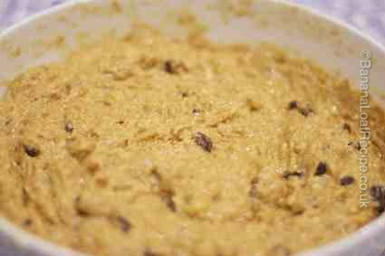

The Banana Loaf Recipe

This is our Signature Banana Loaf Cake recipe. It is the original recipe and will always be our favourite. Made with wholemeal flour, dark brown sugar and raisins, it has depth of flavour plus it is moist and more-ish.
If you want to print a copy, please see our printable Banana Loaf recipe or our special fun Printable Banana Loaf Recipe for Kids if you want to bake it with your little ones.
Banana Loaf Cake Recipe
A deliciously moist banana loaf with wholemeal flour, dark brown sugar and raisins. The original and the best.
Gives: 8-10 slices
Timings
Prep Time:
Cook time:
Total time:
Ingredients
8oz/225g wholemeal plain flour
4tsp baking powder
4oz/110g dark brown sugar
4oz/110g butter or margarine
1lb/450g bananas, mashed with a fork (approx 3-4; weight is with skin)
4oz/110g raisins
2 eggs, beaten
Equipment: a 2lb loaf tin (approx 23cm x 13cm x 7cm)
Method
1. Preheat the oven to 160 degrees celsius (for fan-assisted ovens use 150 degrees), gas mark 4 or 350 F.
2. Prepare the loaf tin by lining with greaseproof paper
3. In a large mixing bowl, mix together the flour, baking powder and sugar. Stir well to break up any sugar lumps.

4. Add your butter or margarine to the dry ingredients. Rub the fat into the flour using the rubbing-in method. (See our article on the rubbing-in method for help with this.) The result should be a breadcrumb-like texture.

5. Add the raisins, the mashed banana and the beaten egg.
6. Mix well until there are no flour lumps. It should look like a thick batter.

7. Spoon the contents into the prepared loaf tin

8. Bake on the middle shelf of the preheated oven for 1 hour.
9. After 1 hour check your cake. The top should have risen and a skewer inserted into the cake should come out clean. Cracking of the top is a good sign.

10. Cool on a wire rack.
11. Slice and serve with or without butter.
12. Will keep for several days in an airtight tin.
Printer-friendly Banana Loaf Recipe
We have a printable Banana Loaf cake recipe here and a printable Banana Loaf Recipe for Children here.